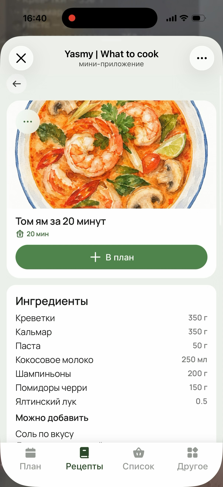

Yasmy: from saved recipes to a ready-made meal plan
Yasmy suggests meals for the next few days. You can swap dishes, adjust portions and get a shopping list for your plan.
Open Yasmy in TelegramAbout the project

I started with a recipe collection
Whenever we ran out of food, my partner and I would discuss what to cook again. I looked up recipes and made the shopping list. I thought keeping our favourite dishes in one place would make choosing easier. That was the idea behind the first version of Yasmy.
- 01save a recipe
- 02make a meal plan
- 03get a shopping list
I wanted to understand when other people decide what to cook and whether their saved recipes help them choose.
the hardest part is deciding what to cook
In January I ran an online survey through group chats, Instagram and UX communities. Of the 69 responses, I selected 50 from people who regularly cook at home and experience difficulties planning meals.
The most common frustration in this group was deciding what to cook. Participants typically planned two or three days ahead or chose meals according to their mood. Asked about recipes, 19 of the 50 said, “I don’t save them anywhere. I decide on the spot.” That habit also competes with Yasmy: people can choose dinner without opening an app.
I started with the idea of a recipe library. The survey gave me a question for the interviews: the last time you had to decide what to cook, what helped you settle on a dish?
Number of participants out of 50. Up to three answers were allowed.
50 participants, one answer each.
Out of 50 participants; multiple sources allowed. Selected options are shown.
- Search engines
- 33 of 50
- Instagram / TikTok
- 27 of 50
- Telegram / VK
- 19 of 50
- Recipe apps
- 3 of 50
The survey grouped Telegram and VK as a single option. Interview participants specifically mentioned using Telegram.
Selected sample, N = 50. Bars show the share of 50 participants. This volunteer sample focuses on planning difficulties; results cannot be generalised to everyone who cooks at home.
interviews: how people choose meals
Method. Four research interviews, March 2026. Recruitment from people who left their contact details in the survey. We explored their latest cooking and shopping experiences: the trigger, actions, options, and reasons for their choices.
The next meal decision starts when food runs out
One participant chose the next dish after the last portion; another did so on her way home. They recalled familiar meals and considered tiredness and ingredients at home. A saved recipe does not yet decide what to cook now.
Plans change with circumstances
One participant had stopped weekly planning: she wanted different food, discounts changed her choice of meat, or ingredients ran out. Another did not return to her AI-generated menu. Getting a plan and using it are different tasks.
Not everyone who cooks needs help
One participant was happy with her routine: decisions with her partner, bulk shopping, and a chart on the fridge. Further testing should focus on people who struggle to choose meals or maintain a planning routine.
Yasmy suggests the first meal plan
In the original concept, people had to choose every dish themselves. After the interviews, I changed the first step. Now they open a suggested plan and decide what to keep for dinner. We want to see whether having a starting point makes choosing easier.
- 01see a suggested menu
- 02keep the dishes or edit the plan
- 03make a shopping list
how to swap a dish
To swap breakfast, choose another dish and tap “Add to plan”. When filling in several days, you may want to keep choices you have already made. Say you picked two portions of soup for dinner and removed breakfast.
Fill in the gaps. Yasmy suggests dishes for the open slots. Your two portions of soup stay in the plan, and the breakfast you removed stays out.
Start over. Yasmy picks meals again for the selected days, including the dinner you had already chosen soup for.
Personal recipes get priority in suggestions. If no suitable dish is available, the slot stays empty: dietary restrictions take priority over filling the menu.

Shopping from the plan
The list covers the entire plan period: four days here. Groceries are grouped by category and can be checked off.
Shopping in Telegram
The bot can send the list as a message. It keeps product categories together and includes a Mark all purchased action.
Importing a recipe from a link
I gave up on a recipe app after two entries. Typing out the ingredients was tedious, so I designed a way to add recipes to Yasmy from a link.
For example, send the bot a link to a tom yum recipe. It puts the recipe together so you can check the ingredients, edit them if needed and pick a day to cook it.

What the first tests revealed
I asked two participants to try a working version of Yasmy. The sessions showed where the interface caused confusion.
The plan period was unclear
Observation. A participant mistook a three-day plan for today's menu.
Change. We added a duration choice to onboarding. The plan itself still has no period label; repeat testing will show whether this change is enough.
Shopping and meal plans do not always cover the same period
Observation. Shopping for tomorrow and stocking up are different tasks. A list covering the whole plan did not always match expectations.
Change and limitation. We labelled the shopping period. A separate duration choice has not been added, so this does not solve a short shopping trip within a longer plan.
Checking off an item should not move its row
Observation. Checked items jumped around the list, making the participant lose track of them.
Change. Checking an item off no longer changes the row order.


Validation status. Repeat testing has not happened yet. I check fixes through daily use; this also helped me find and fix additional shopping bugs.